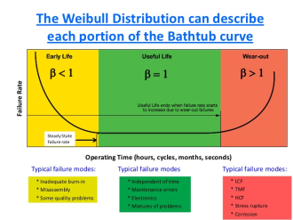
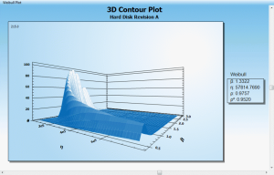

Failure and Repair Distribution
The goal of system modeling is to provide quantitative forecasts of various system performance measures such as downtime, availability, number of failures, capacity, and cost. Evaluation of these measures is important to making optimal decisions when designing a system to either minimize overall cost or maximize a system performance measure within the allowable budget and other performance-based constraints.
When using software tools to model system design, several factors must be established in order to accurately model the system. Two important factors taken into account in the analysis of a system are the failure and repair behaviors of the system components. The failure and repair rates of components are often defined in terms of distributions, or how the failures and repairs occur during the time period the system is operational. Therefore, selecting the appropriate distributions for these failure and repair times is critical to analyzing your system metrics accurately. This article discusses the distribution types most commonly encountered in real-world applications.
General Overview
In general, failure and repair times for systems and components are thought of as being random in nature and therefore unpredictable. However, even though these times are random, they can be modeled using statistical distribution techniques widely recognized in the mathematical sciences.
A useful way to easily visualize the characteristics of a failure or repair distribution is through the use of probability density functions (pdf). This article uses probability density functions to describe different distributions.
Note: There are also other forms by which this same information can be characterized. These other forms are the cumulative distribution function, or cdf, and the survival function (the complement of cdf). These forms are not discussed in this article; however, if any one of the above functions is known, all of the other functions associated with the distribution can be easily obtained.
In general, the shape or type of failure distribution depends upon the component's failure mechanisms. Similarly, the shape or type of repair distribution depends upon several factors associated with component repairs. Several methods are used to determine the distribution that best fits a given failure or repair pattern. Or, if failures or repairs are known to follow a particular distribution, the specific parameters that define this pattern can be determined by using the known failure and repair times.
If the type of distribution is not known in advance, then the distribution that best fits the failure or repair times can be found using statistical methods. To find the best distribution manually, probability plot papers are used. Alternatively, engineering software products can also be used to generate probability plots and determine best-fit distributions. In general, it is better to use available software tools because best-fit distributions are determined using scientific analysis rather than human judgment, which must be used when manually creating probability plots. Such engineering software products are commonly referred to as "Weibull" analysis tools, simply because Weibull is a widely accepted, commonly used distribution for describing failure and repair rates.
Distributions
As noted earlier, determining the failure and repair distributions of your system and its components is a significant part of evaluating the reliability of your design. The next several sections of this article describe the most commonly used distributions for modeling failure and repair times. For your convenience, all of the required parameters for each of these distributions are summarized in the table at the article's conclusion.
Distributions are referred to as single-parameter or two-parameter distributions. For single-parameter distributions, only one variable is used to define the shape of the curve. Two-parameter distributions require two variables to accurately model the distribution.
Exponential
If the failure rate is constant, which is generally true for electronic components during the main portion of their useful life, the reliability of the component follows an exponential distribution. The exponential distribution is a single-parameter distribution, defined by using failure/repair rate data. Exponential distributions have a wide range of applications in analyzing the reliability and availability of electronic systems, various queuing networks, and Markov chains.
Another consideration when assuming a constant failure rate is that component failure behavior is regarded as memoryless. The memoryless property indicates that the remaining life of a component is independent of its current age. This means that a used component is assumed to be as good as a new component. The memoryless characteristic also assumes that the successful operation of a component does not degrade the component. This memoryless property may not be applicable for all types of components, particularly when there is wear and tear. Therefore, the assumption that component lifetimes are described by an exponential distribution should be determined by evaluating field data.
By manually plotting the failure rate from failure data, it can be determined if the failure rate is almost constant, or whether it shows no pattern of change. In this case, the failure rate can be assumed to follow the exponential distribution. For ease of plotting, probability plot papers can be used. However, if a good Weibull analysis software tool is available, it can be used to accurately and quickly analyze the failure data using scientific computational analysis.
The normal (or Gaussian) distribution is frequently used to describe equipment failure behavior that has increasing failure rates with time. It is also commonly used to model strengths of materials and the lifetimes of consumables. The normal distribution has a wide range of applications in statistical inference, measurement errors, uncertainty analysis, and forecasting errors.
The normal distribution is an important and widely used distribution in the field of statistics and probability. It is the best known two-parameter distribution, defined by the mean (μ) and standard deviation (σ). The mean is the expected value of the associated random variable. Using failure or repair data, the mean of the distribution can be obtained by finding the average of these values. In other words, for failure data, it is the sum of the failure times divided by the total number of failures. The standard deviation is a measure of the deviation of the actual values from the mean. In other words, it is the square root of the mean of the squared deviations.
A normal distribution is symmetric about its mean. This means that the positive and negative deviation occur with equal probability. This property is valid for several applications involving random deviations. In reliability engineering, this property can be seen with strengths of materials, percentages of defects in lots, and certain deterioration processes. When μ = 0 and σ = 1, then it is referred to as the standard normal distribution.
To determine if failures are following a normal distribution, best-fit distribution analysis can be quickly performed on field data using a good Weibull or failure data analysis software product. If no such tool is available, failure data points can be manually checked to see whether they follow the normal distribution. By plotting the pdf using the failure time data, you can determine if the pdf is symmetric to its mean and also bell-shaped. If so, the failure times follow the normal distribution. Another more systematic way of determining if failure times are normally distributed is to plot the failure time data on probability plots of the normal distribution. If the data points form a straight line, then the data follows a normal distribution.
Lognormal
Lognormal distributions are encountered frequently in metal fatigue testing, maintainability data (time to repair), chemical-process equipment failures and repairs, crack propagation, and loading variables in probabilistic design. The lognormal distribution is similar to the normal distribution except that the logarithms of the values of random variables-rather than the values themselves-are assumed to be normally distributed. The two distribution parameters for the lognormal distribution are the mean (µ) and standard deviation (s) of the underlying normal distribution.
The lognormal distribution is found when the time to failure or repair results have cumulative contributing factors. This property can be seen in several deterioration processes associated with fatigue and creep mechanisms. The deterioration in such cases is generally progressive. For example, a crack grows rapidly under high stress because the stress increases progressively as the crack grows. In many situations, failure or repair times depend on several factors that are random in nature. In such cases, the multiplication effect of these factors leads to a lognormal failure or repair distribution.
To confirm that the failure or repair time data follows a lognormal distribution, the logarithms of individual data points are first found and then the same techniques for verifying the normal distribution can be used. However, the best verification method is to plot the failure or repair time data on a lognormal probability plot and determine whether it follows a straight line. A Weibull analysis software product that supports advanced scientific methods can quickly perform these tests.
Weibull
Among all the distributions available for reliability calculations, the Weibull distribution is the only one unique to the field. In his paper "A Distribution of Wide Applicability," Professor Wallodi Weibull (1887-1979), who was studying metallurgical failures, pointed out that normal distributions are not applicable for characterizing initial metallurgical strengths. He then introduced a function that could embrace a great variety of distributions and used seven different case studies to demonstrate how this function allowed the data to select the most appropriate distribution from a broad family of Weibull distributions. Probably the most widely used distribution in reliability engineering, the Weibull distribution can model failures cause by fatigue, corrosion, mechanical abrasion, diffusion, and other degradation processes.
The two-parameter Weibull distribution requires characteristic life (η) and shape factor (β) values. Beta determines the shape of the distribution. If beta is greater than 1, the failure rate is increasing. If beta is less than 1, the failure rate is decreasing. If beta is equal to 1, the failure rate is constant. While there are several ways to check whether data follows a Weibull distribution, the best choice is to use a Weibull analysis software product. If such a tool is not available, data can be manually plotted on a Weibull probability plot to determine if it follows a straight line. A straight line on the probability plot indicates that the data is following a Weibull distribution.
Summary of Distribution Parameters
The parameters required to model failure or repair times depend on the selected distribution. The following table lists parameters, indicates the distributions that require them, and describes how they are used.
Part type identification in any prediction model is the major factor affecting failure rates as well as the model inputs that must be considered. As an example, Table 1 compares the device parameters required for microprocessor and silicon field effects transistor parts stress models in MIL-HDBK-217 and Telcordia. Each of these parameters has a dramatic effect on the failure rate prediction of the device. It is also very important to consider the different part types supported by a particular standard when deciding which one to choose. For example, MIL-HDBK-217 includes a model for laser diodes and Telcordia includes a model for batteries, but the reverse is not true.
| Parameter | Description |
|---|---|
| Mean (μ) | Required for Normal and Lognormal distributions. For Normal, it is the MTTF. For Lognormal, it is the mean of the log of the failure/repair times. |
| Standard Deviation (σ) | Required for Normal and Lognormal distributions. This value is the square root of the variance that is a measure to quantity the amount of spread, or more correctly dispersion, of a distribution measured by the second central moment of the distribution. In general, standard deviation is small if the spread or dispersion of values is small. |
| Characteristic Life (η) | Required for Weibull distributions. Defined as the time at which 63.2% of the device population will have failed. |
| Shape Factor (β) | Required for Weibull distribution. The value is used to describe the shape of the hazard curve.
|
If you would like information about how the WQS Weibull Analysis module can be used to perform best-fit analysis and analyze failure data, contact us.